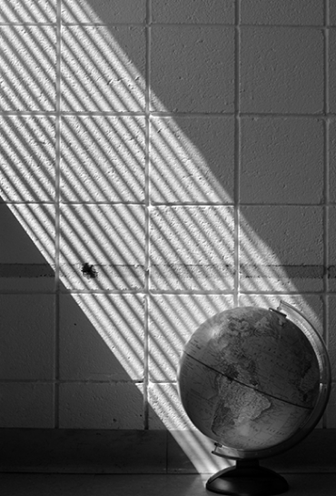
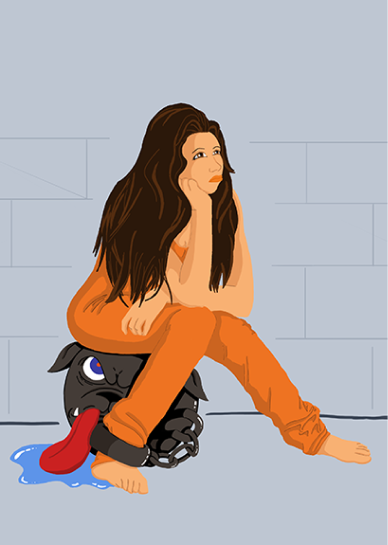

I enjoy learning, problem solving, and creating. Combined with a passion for technology, these interests have led me to software development.
As a front end developer I love to design and build visually stimulating content that offers responsive and smooth functionality for my users. I am constantly learning and practicing my craft and I am always excited to add the next skill to my toolbox.
When I'm taking a break from coding, you might find me creating digital art or enjoying photography. Here is a little peek at some of my work.

